Finding 1
Who grew biggest?
Revenue, profit and assets for the five listed firms, 2015 to 2025, plus assets under management (AUM) for the three fund managers.
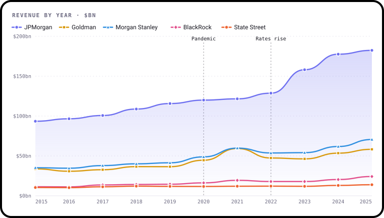
- JPMorgan is in a league of its own. Revenue rose from $93.5bn to $182.4bn, more than the other four firms put together.
- Goldman and Morgan Stanley grew profit fastest. Goldman's profit is 2.8× its 2015 level and Morgan Stanley's is 2.8×, both ahead of JPMorgan's 2.3×.
- BlackRock doubled its revenue (2.1×) but profit grew less (1.7×), so its profit margin narrowed.
- State Street grew slowest, with profit up 1.5×.
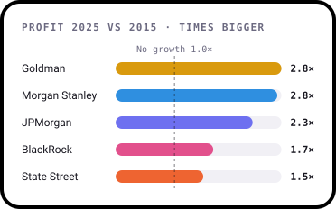 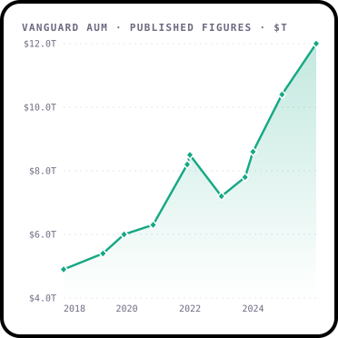
Assets under management
BlackRock's AUM tripled, from $4.6 trillion at the end of 2015 to $14.0 trillion at the end of 2025. State Street's grew from $2.2 trillion to $5.7 trillion. Vanguard is private and publishes AUM only now and then; its latest figure is $12.0 trillion.
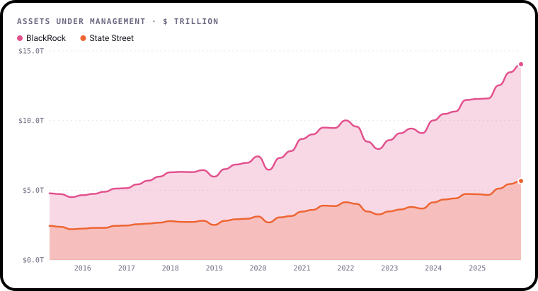
The banks' balance sheets
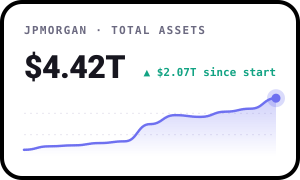 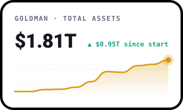 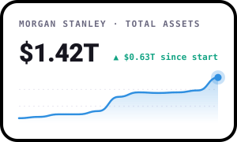
Notes
- Revenue for the banks is net of interest expense, the way they report it.
- Profit is net income for the year. AUM is not comparable with the banks' total assets: AUM is clients' money, total assets is the bank's own balance sheet.
- Vanguard's points are only the dates Vanguard (or a press report of Vanguard's figure) published. Gaps are left as gaps. Sources are in
data/manual/vanguard_aum.csv.
Finding 2
Where do the banks make their money?
Each bank's revenue split into three kinds of business: Markets (trading and dealmaking), Wealth (wealth and asset management) and Lending (consumer and business banking).
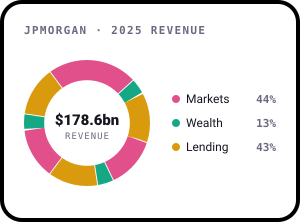 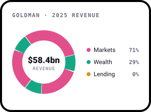 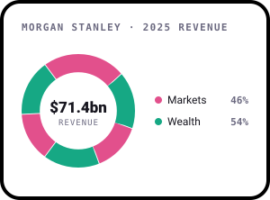
- Goldman is still a markets firm. 71% of its 2025 revenue came from trading and dealmaking. Its push into consumer banking (Marcus, the Apple Card) is being wound down, and lending is now 0%.
- Morgan Stanley is now more wealth manager than trader. 54% of revenue came from wealth and asset management, after buying E*TRADE (2020) and Eaton Vance (2021).
- JPMorgan is the most balanced: 44% markets, 43% lending and 13% wealth.
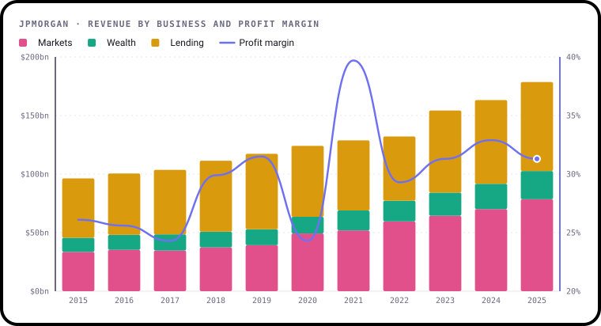
Regrouping: from 2022, JPMorgan reports its commercial bank inside the investment bank, so part of its lending moves into Markets from that year. The jump in 2022 is a change of grouping, not of business.
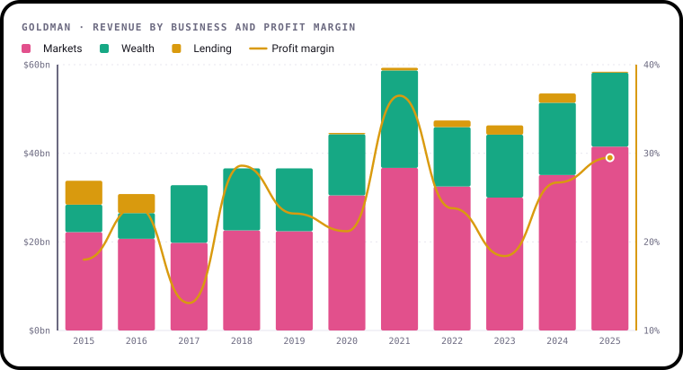
Regrouping: Goldman reorganised in 2020 and again in 2022. From 2020 the figures use its current three segments, restated by Goldman.
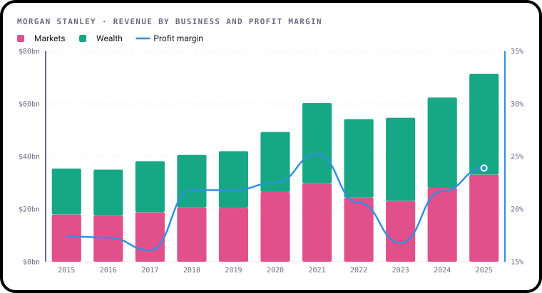
Notes
- Segment figures come from each bank's 10-K. Each year uses the newest 10-K that reports it, so years near a reorganisation use restated figures.
- The mapping from each bank's segment names to the three groups is in
data/manual/segment_map.csv. - JPMorgan's segment figures are on its 'managed basis' and leave out its corporate centre, so they add up to slightly more or less than reported revenue.
Finding 3
Where do the fund managers invest?
The sector mix of the US-listed shares that BlackRock, Vanguard and State Street report in their 13F filings, combined, at each year-end.
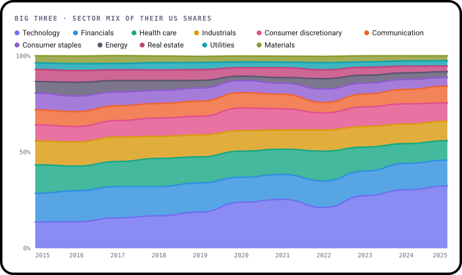
- Technology took over. It rose from 14% of the Big Three's holdings in 2015 to 32% in 2025, by far the largest sector.
- Most other sectors shrank to make room, above all health care, consumer staples, real estate and energy.
- They didn't choose this. It is what happened to the market itself as Apple, Microsoft, Nvidia and the rest grew (see finding 4).
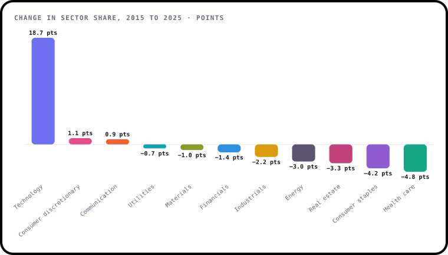
Notes
- US-listed shares only. 13F filings leave out bonds, cash, private assets and shares listed outside the US.
- Sectors come from each company's SEC industry code (SIC), grouped into 11 sectors close to the GICS sectors index providers use. The largest holdings were checked by hand (
data/manual/sector_overrides.csv), for example Alphabet and Meta as Communication and Visa as Financials. At least 95% of each firm's value is mapped in every quarter. - ETFs held inside the filings are left out of the mix, since each is a basket of other companies.
Finding 4
Choosing, or just following the market?
Each firm's sector mix compared with the 'market': every 13F filer's holdings added up, which is the institutional market (around 4,000 to 9,000 managers a year).
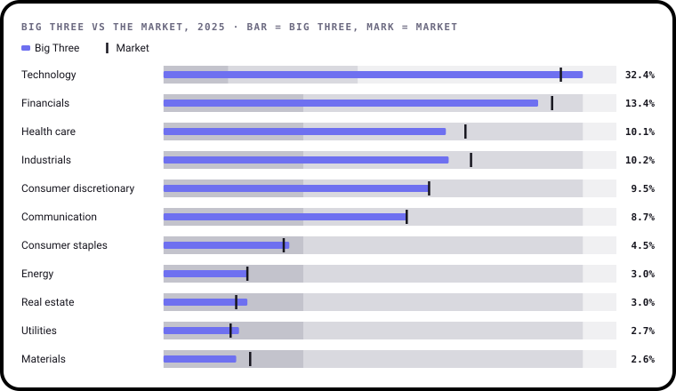
- They follow the market almost exactly. In 2025 no firm's sector mix was more than 3% away from the market's (0% would be an exact copy).
- The Big Three hold a little more technology (32% against 31%), most likely because index funds hold the biggest companies in full, while other managers spread more into smaller ones.
- The one clear tilt was Vanguard's real estate in 2015: 8% against the market's 5%, from its large property (REIT) index funds.
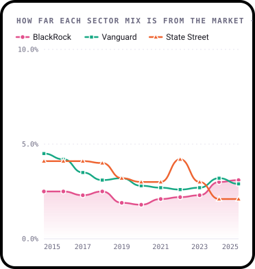
How the distance is measured
Add up the gaps between a firm's weight and the market's weight in each of the 11 sectors, then halve it. That is the share of the portfolio that would have to move to match the market. 0% is an exact copy; 100% would mean no overlap at all.
Notes
- The market is built from the SEC's bulk 13F data, one year-end per year. Some filers report in the wrong units; those rows are fixed or left out using a price check against the Big Three's own filings (see
data/README.md).
Finding 5
Energy then and now
Oil, gas and coal companies, and a hand-made list of clean energy companies, in the Big Three's holdings since 2015.
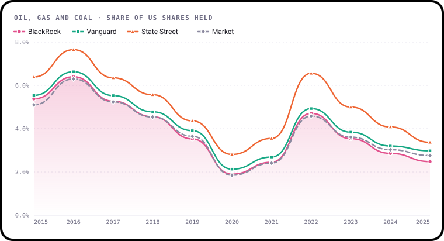
- Oil, gas and coal halved as a share. BlackRock went from 5% to 2%, Vanguard from 6% to 3% and State Street from 6% to 3%. The market fell the same way (5% to 3%), so this is falling energy share prices and booming tech, not selling.
- 2022 shows it: energy's share jumped when oil and gas prices spiked after Russia invaded Ukraine, then slid back.
- Clean energy stays tiny. The Big Three's clean energy holdings peaked at $28.7bn and were $21.8bn at the end of 2025, against $451.6bn in oil, gas and coal.
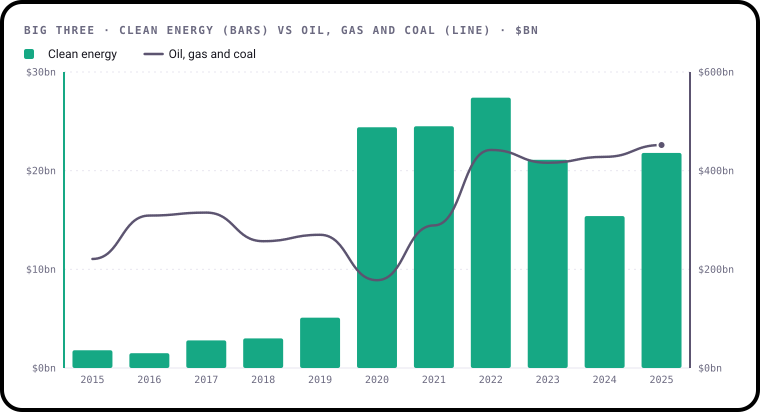
Notes
- Oil, gas and coal is the Energy sector: producers, oil services, refiners, pipelines and coal, by SEC industry code.
- Clean energy is a list of 31 US-listed companies whose main business is solar, wind, geothermal, fuel cells, storage or renewable power, each with a reason (
data/manual/clean_energy.csv). Big utilities with large renewable fleets, such as NextEra Energy, stay in Utilities because most of their business is still a utility. - Tesla is left out of clean energy on purpose: it is a carmaker, and at its size it would swamp every other name.
Finding 6
How much of the US stock market do the Big Three hold?
BlackRock, Vanguard and State Street's holdings of company shares, as a share of the total value of all US public company shares (Federal Reserve figures).
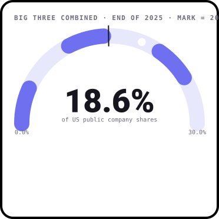 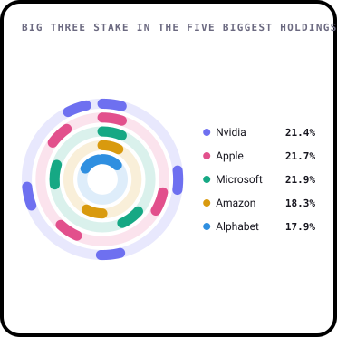
- Almost a fifth of the market. Together they held 18.6% of all US public company shares at the end of 2025, up from 14.9% in 2015.
- Vanguard is the largest (8.2%), then BlackRock (6.9%) and State Street (3.5%).
- In the biggest companies the stake is larger. The typical (median) Big Three stake in their ~500 largest holdings rose from 18% to 24%. They owned more than a fifth of 399 of those companies in 2025, against 97 in 2015.
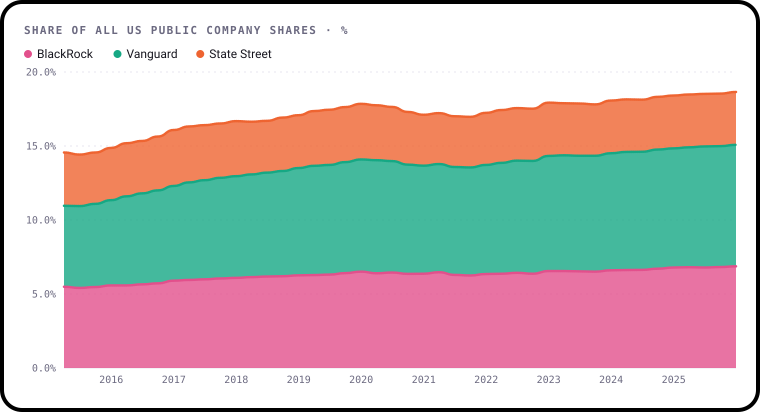
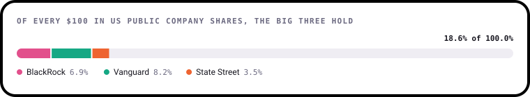
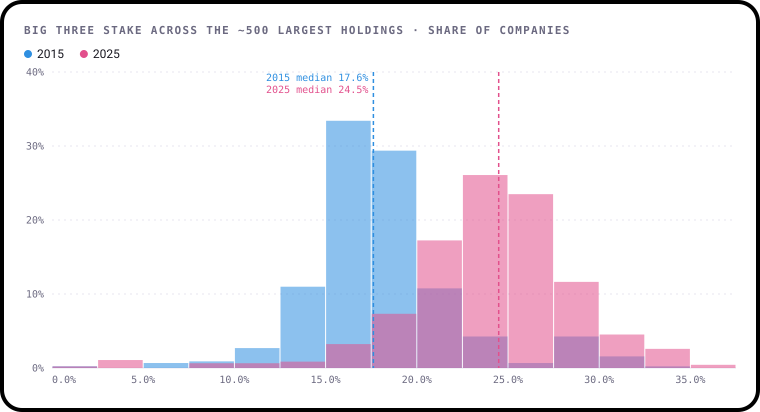
Notes
- Market value is the Fed's figure for all US public companies' shares (FRED series
BOGZ1LM883164115Q). 13F filings also include some foreign companies listed in the US, so the share is a close estimate rather than exact. - Stakes divide the Big Three's combined shares by each company's shares outstanding from SEC filings. Share classes are added up (Alphabet A and C). Berkshire Hathaway is left out because one class A share is worth 1,500 class B shares. About 7 to 10% of the largest holdings have no usable share count.
- Holding is not owning outright: the Big Three hold these shares for the people and pension funds invested in their funds.
Finding 7
How did profits move when rates rose in 2022?
The Federal Reserve raised its main interest rate from an average of 0.08% in 2021 to 5.0% in 2023, the fastest rise in forty years. Here is what happened to profit between 2021 and 2023.
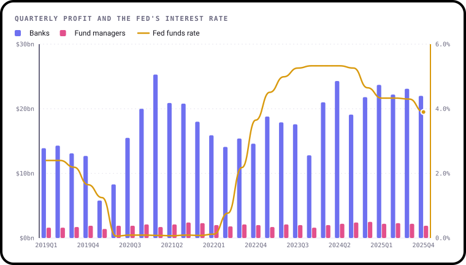
- JPMorgan's net interest income jumped 71%, from $52.3bn to $89.3bn. It earned more on loans while paying little more on deposits. Its profit still rose 3% while the others fell.
- Goldman's profit fell 61% and Morgan Stanley's 40%. 2021 was a record year for deals; higher rates slowed mergers and share sales, and their interest income barely moved (−2% and +2%).
- Fund managers felt falling markets, not rates. BlackRock's profit fell 7% as lower share prices cut its fees. State Street's fell 28%, even though its interest income rose 45%.
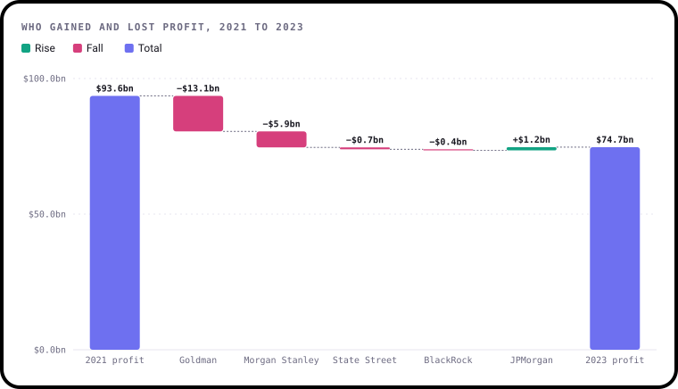
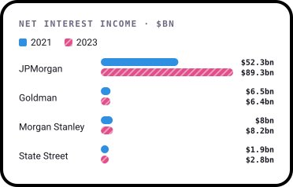 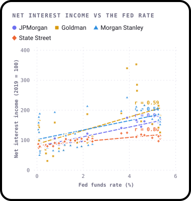
Notes
- Net interest income is interest earned minus interest paid (XBRL tag
InterestIncomeExpenseNet). BlackRock does not report it. - In the scatter, each firm's net interest income is indexed to its 2019 average (= 100), so firms of very different sizes share one scale. Each dot is one quarter.
Finding 8
Shocks: 2020, the 2022 rate rises and the 2023 bank failures
Profit in each shock against the same quarters a year earlier: the first half of 2020, the whole of 2022, and the first half of 2023 (when Silicon Valley Bank, Signature and First Republic failed).
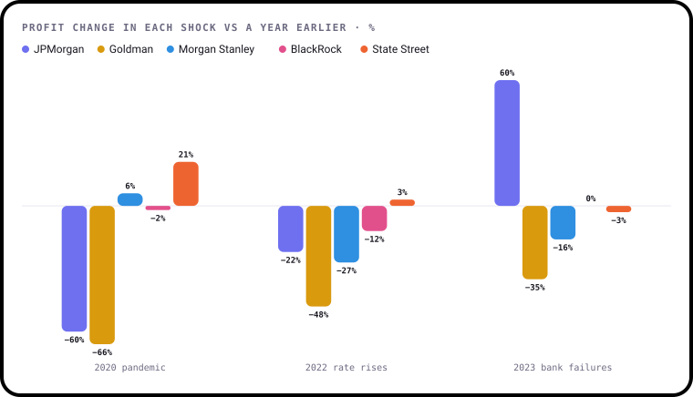
- The pandemic hit the lenders. JPMorgan's profit fell 60% and Goldman's 66% as they set money aside for loans that might go bad. State Street's rose 21%, helped by busy markets.
- 2022 hit almost everyone, led by Goldman (−48%).
- The 2023 bank failures split the big banks. JPMorgan's profit rose 60%, helped by higher interest income and by buying First Republic in May 2023. Goldman's fell 35%.
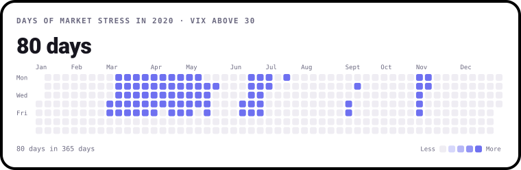
The VIX, Wall Street's 'fear gauge', closed above 30 on 80 trading days in 2020 and peaked at 83 on 16 March 2020. It did so on 49 days in 2022 and not once in 2023: the bank failures shook banks far more than the wider market.
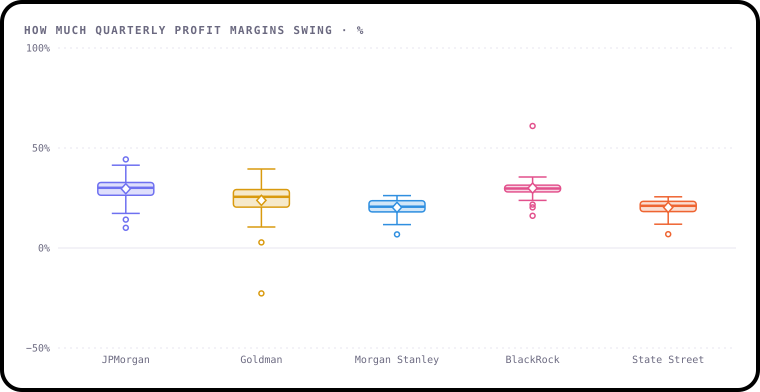
Profit margins by quarter, 2015 to 2025. A taller box means a less predictable business. Goldman swings the most.
Notes
- Each shock compares the same quarters a year apart, so seasonal patterns cancel out.
- Days of market stress use FRED's daily VIX close (series
VIXCLS).
Finding 9
Good, middling and bad scenarios to 2030 and 2035
Not financial advice. These are illustrations from a deliberately simple model, not predictions or recommendations. The future will not look like any single line here.
Each firm is linked by a simple model to the things that move it: the stock market, interest rates and market volatility. We then run 10,000 simulated futures for those drivers, built from real stretches of history since 1990 (including the 2000, 2008, 2020 and 2022 shocks), and push each one through the firm models. Bad, middling and good are the 10th, 50th and 90th percentiles of the results: 1 in 10 futures came out worse than 'bad', and 1 in 10 better than 'good'.
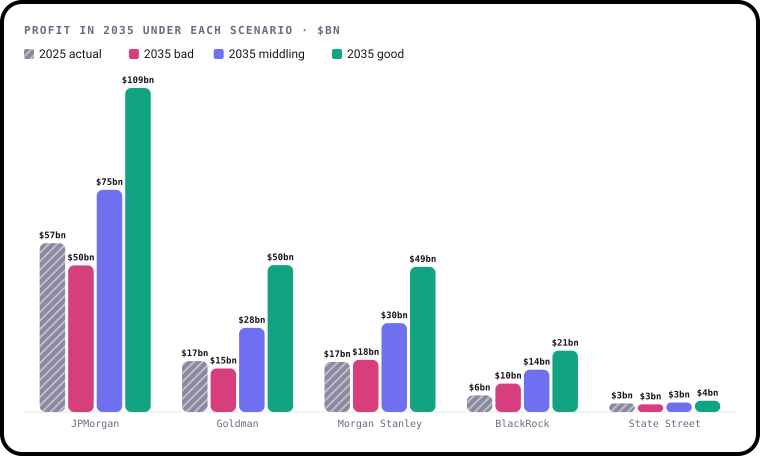
- JPMorgan stays far ahead. Its 2035 profit comes out at $49.5bn (bad), $75.0bn (middling) and $109.5bn (good), against $57.0bn in 2025.
- The range is wide, and that is the honest answer. In the bad case, 2035 profit is below its 2025 level for JPMorgan, Goldman and State Street.
- Goldman and Morgan Stanley have the widest ranges relative to their size, because trading and dealmaking swing with markets. Goldman's 2035 profit: $14.7bn (bad), $28.4bn (middling) and $49.6bn (good).
- BlackRock's AUM reaches $33 trillion in the middling case (from $14 trillion), with a range of $21 to $49 trillion.
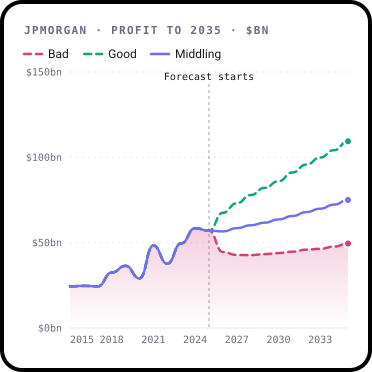 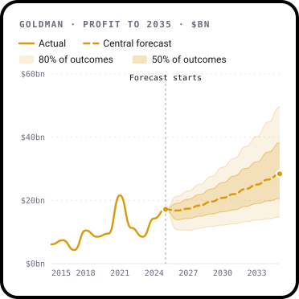 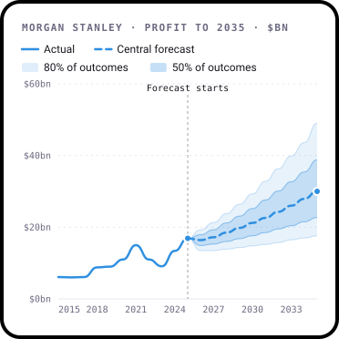 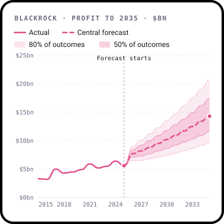 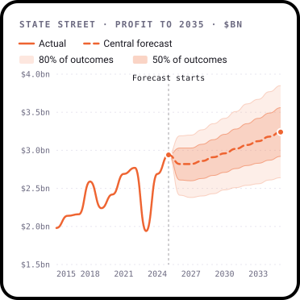
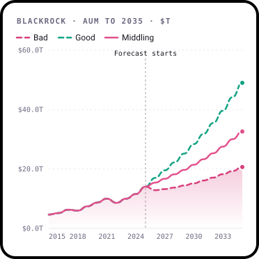 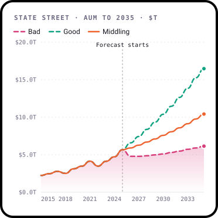
The drivers
In the middling case the US stock market's total value grows about as fast as it did from 1990 to 2025 (about 9% a year, including new listings), reaching 2.4 times its 2025 level by 2035. The bad case is 1.2 times and the good case 4.5 times. The Fed funds rate is pulled back towards its long-run level, about 2% as estimated from 1990-2025, with real surprises along the way.
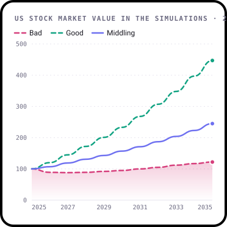 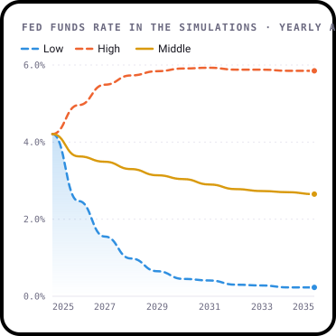
Backtest: how close did it get?
We trained the same models on 2015 to 2020 only, then asked them about 2021 to 2025.
- With the real market and rates fed in, yearly revenue was off by 5% to 13% on average. Profit is harder: from 9% for JPMorgan to 38% for Goldman, whose 2021 deal boom and 2023 slump no simple model would call.
- With everything simulated, what actually happened landed inside the bad-to-good range 78% of the time. A well-judged 10th-to-90th range should catch about 80%.
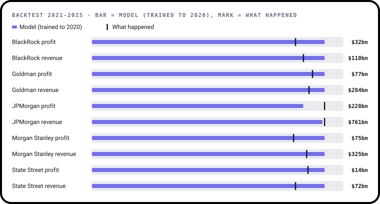
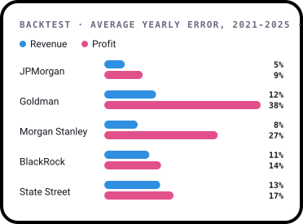
How the models work
- Banks: net interest income follows interest rates and the size of the market; other revenue (trading, deals, wealth) follows the market and volatility, with quarter-of-year effects; profit margin follows rates and volatility.
- Fund managers: AUM follows the market plus a steady trend (new client money); revenue follows AUM and rates; profit margin follows rates and volatility.
- Errors are simulated too. Each model's leftover error persists from quarter to quarter, as it does in real life, so the range reflects how wrong the model has been.
- Vanguard is left out: its 11 published AUM figures are too few for a model.
- Everything is in
wallstreet/forecast.py; outputs and settings (including the fixed random seed) are inmodels/.
Limits
- Ten years is a long way. Mergers (like BlackRock's 2024 and 2025 deals), new rules or a new business line can change a firm in ways no driver captures.
- 'Good' and 'bad' describe profit and AUM, not whether an outcome is good for anyone else.
- The models are deliberately simple so that every link can be read and checked.
About
Data and method
- Company results: SEC XBRL filings (10-K and 10-Q), 2015 to 2025, with Q4 worked out from annual figures.
- Holdings: SEC 13F filings for BlackRock, Vanguard and State Street, and the SEC's bulk 13F data for the market as a whole. US-listed shares only.
- Markets and rates: FRED (Federal Reserve Bank of St. Louis).
- Vanguard is private, so it is judged on its published assets under management and its 13F filings.
- Forecasts: simple driver models and 10,000 Monte Carlo futures, backtested on 2021 to 2025. Illustrations, not predictions.
Everything is open: code, data, tests and notebooks are on GitHub. Every chart is drawn with bezel-charts, an open-source Python library by the same author.